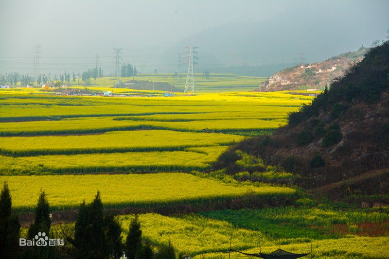
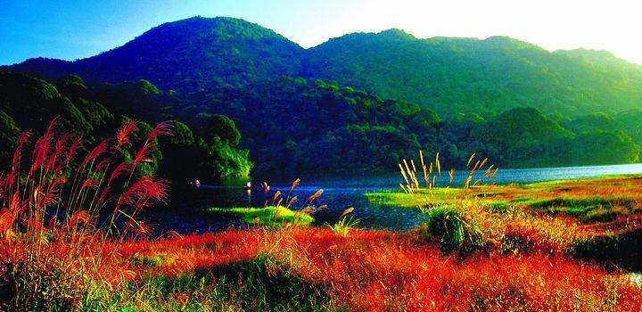
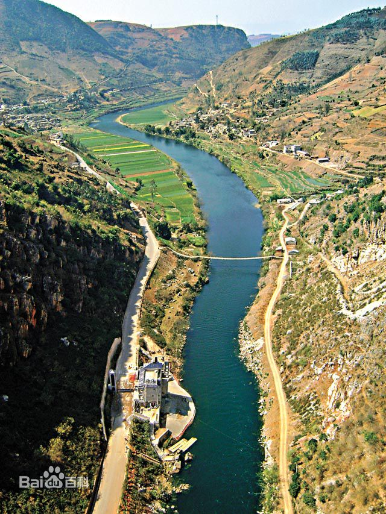
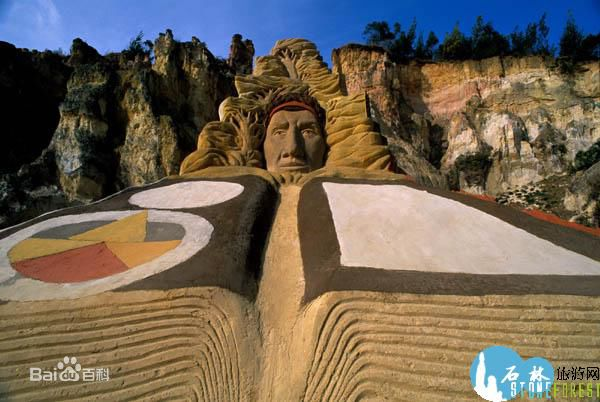
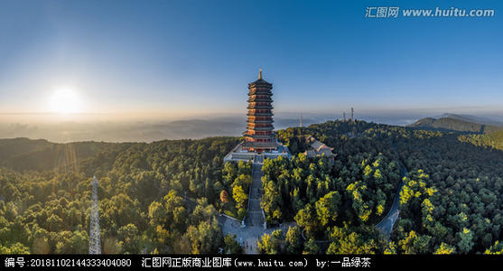

-

罗平油菜花
罗平油菜花是指云南省曲靖市罗平县一种美丽而蔚为壮观的人造景观。在罗平主要是拍油菜花，玩金鸡、牛街、多依河及九龙瀑。一年一度的云南罗平油菜花旅游节，将使您感受到人与自然的和谐，观赏到佳境如画的风光。一般推荐的是县城东北方向的金鸡峰。登上金鸡峰，看油菜花田比较平坦，而稍远处有些孤峰拔起，很壮阔的感觉。很多罗平花海的照片都是这里拍的。罗平县自1999年至2012已成功举办了12届“中国·云南·罗平国际油菜花文化旅游节”，已成为面向全国、走向世界的农业观光旅游大型节日活动，成为云南旅游的一大亮点。11年共接侍中外游客1060多万人次，共实现旅游综合收人50多亿元。
-

翠峰山
位于曲靖城西14公里的翠峰山风景区，远在唐朝南诏时期佛教就传入了，该风景区建有寺庙，是曾拥有“九庵十八院”的佛教圣地，我国地理学家徐霞客于明崇祯十一年（公元1638年）在曲靖境内考察16天，其中在翠峰考察旅游11天，留有五千多字的日记。现翠峰山已开发为旅游景点,修通了公路,修复重建了一些寺庙。翠峰山风景区，是一个集千年佛教圣地和秀丽的森林景色为一体的风景区。景区占地4.13平方公里，气候亚热带、暖温带气候类型，夏无酷暑，冬无严寒。景区内有丰富的生态资源和悠久的人文景观。
-

珠江源
珠江源，位于曲靖市沾益区城北50公里的马雄山东麓，从马雄山顶下至半山腰，上下两个洞口流水潺潺，即是珠江之源。这里海拔2158米， 景区面积12平方公里，围墙17公里，森林覆盖面积95%以上，植物达1000种以上，野生动物有野兔、野鸡、松鼠、麂子等。珠江源是省级风景名胜区，是我国第三大江——珠江的源头，景区内溪流淙淙，有“一水滴三江，一脉隔双盘”的奇异景观，并有珠江流域滇、黔、桂、粤四省领导和专家的题词、题诗，是广大珠江流域和港、澳同胞、海外侨胞抒发饮水思源之深情、畅享寻源探源之幽意的最佳目的地。 风景区内森林茂密，植物资源十分丰富，森林覆盖率90%以上，生长有73科190种植物，其中滇玉兰、云南含笑、滇润楠、云南樟、滇朴、梁玉茶等为高原特有品种。
-

彩色沙林
云南省陆良县有一片形成于3亿4千万年以前，具有较高旅游价值和地理研究价值，属世界罕见的自然奇观。国家AAAA级旅游区——彩色沙林云南省曲靖市南部陆良县的马街镇境内，占地25平方公里，保护区面积52.8平方公里，是云南旅游精品线路上的重要景区，距陆良县城以南18公里，距石林40公里、昆明130公里、泸西50公里、罗平96公里，具有优越的区位优势和便捷的通达条件。（除此之外，沙林还有很多集科学和历史为一体的人文景观；主要有34个洞穴构成的“洞穴度假村”、“三十六计洞穴浮雕”、“洞穴舞厅”、“沙地跑马场”、“古栈道”、“峰火台”、“古城堡”、“《爨史》浮雕”、“爨府玄 门”、“文房四宝(石笔、石墨、石砚、石纸)”、“碑林”、“化石门”、“南蛮乾门”、“彝家寨门”、“孟获寨门”、“孟获王府”、“沙雕赛区”、“战马坡”、“盘蛇谷”、“蛮王古墓”、“竹园”“千年古藤”、“黑泉”、“挑断口子”等。）
-

寥廓山森林公园
寥廓山森林公园位于曲靖城西南1公里处，1973年辟为公园，公园占地218亩，内有樱花园、梅园、儿童乐园和动物园等。山上绿树成荫，亭阁雅致，曲径通幽，曲靖坝子尽收眼底。寥廓山原名妙高山，在曲靖城西南一公里处。登山凭栏远眺，麒麟区内鳞次栉比的楼房、山川江河尽收眼底，大有一览众山小之概。山上森林茂密，修竹幽幽，山花烂漫，园内绿草如茵，梅兰争艳。亭台随山势而筑，一条条小径蜿蜒曲折。园内还养有猴子、熊、鹿、孔雀等动物，颇受小朋友的喜爱。位于曲靖市西南郊。寥廓山又名胜峰山，源于明代朱元津部将傅友德、蓝玉等在此大败元军，并活捉元军将领平章政事达里麻。为了纪念这场战斗的胜利，而将此山称之为胜峰山。1973年辟为公园。